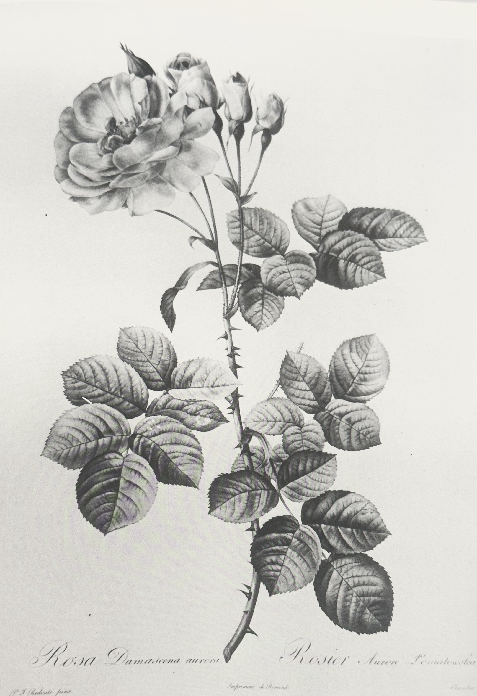
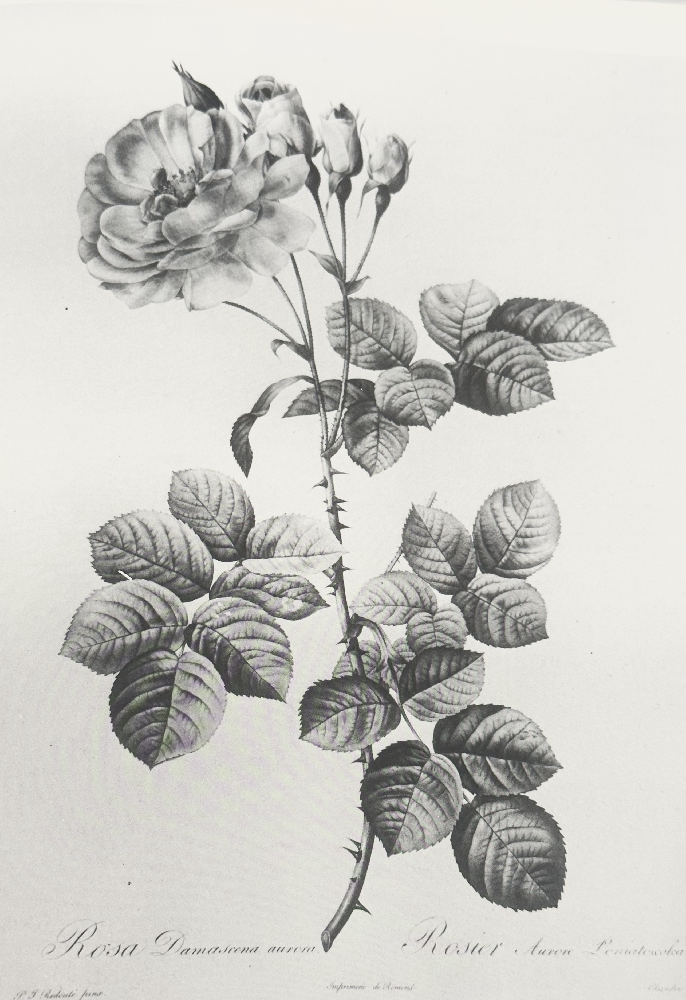
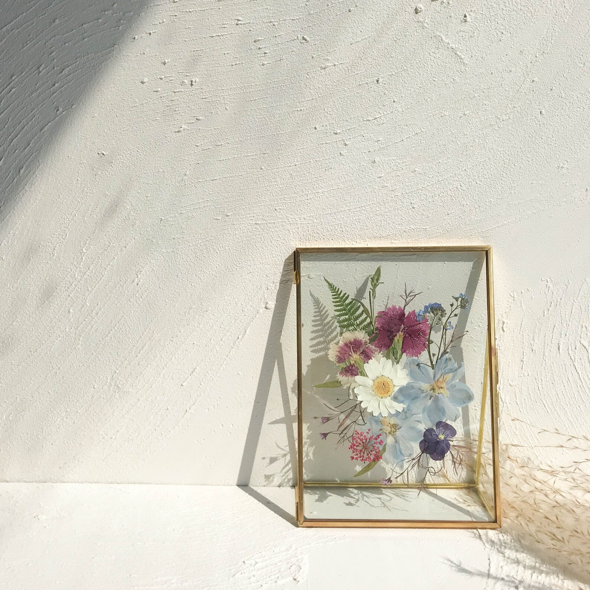

Art
Rosa Damascena Aurora
Roma Damascena aurora is engraving by Pierre Joseph Redoute, the french painter who is reffered to as "le Raphael des Fleurs".
Kelowna's Flower Garden Club

Embroidery, paintings, pressed flowers, sculptures, and sketches are welcomed to be posted here for resale or simply to have the beauty shared.
Roma Damascena aurora is engraving by Pierre Joseph Redoute, the french painter who is reffered to as "le Raphael des Fleurs".

'Ascending Okanagan Sunflowers', Spring 2025 by Silken Rauhala.
Avalon Rose is a Canadian Made Skincare company that is available at the Kelwona Craft Market throughout the year.
There are many online shops that offer Flower Art, and Etsy is a Canadian Store that has so many incredible options! Pressed Flowers
